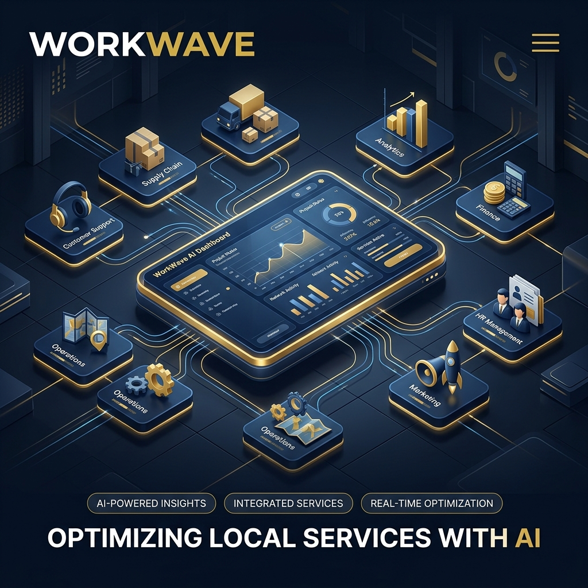
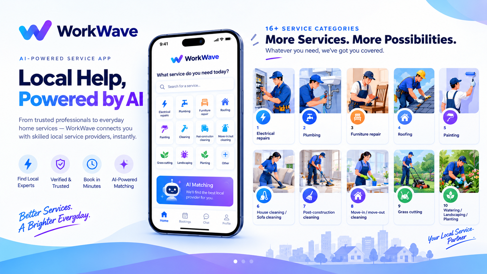
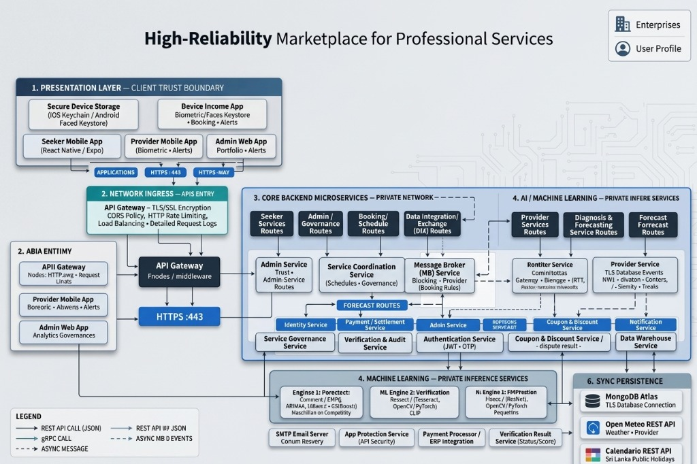

WorkWave
Project Abstract
An innovative, AI-powered MicroLocal platform designed to support micro-entrepreneurs. We seamlessly connect local service providers with customers by combining intelligent matching mechanisms, automated AI issue diagnostics, computer vision-based fraud detection, and predictive demand forecasting with a robust trust governance engine. Together, these technologies drastically improve visibility, security, and operational efficiency within your community.

Project Domain

This section has domain details about our project. Here we describe the information we have gathered by the literature survey, our objectives, and the methodology.
Literature Survey
Existing research has explored several AI-based approaches for improving digital service platforms:
- AI-based Service Recognition – identifies and interprets service requirements from user inputs.
- Provider Recommendation – helps identify suitable service providers based on user requirements.
- Predictive Scheduling – considers provider availability and service constraints for better scheduling.
- Demand Forecasting – predicts future service demand using historical and contextual data.
- Generative AI – supports automated creation of service-related promotional content.
Research observation: Many existing approaches focus on individual functions rather than addressing the complete local service marketplace lifecycle.
Technologies Used
Modern stack powering our innovative local service platform solutions.


System Architecture
High-Reliability Marketplace for Professional Services

Experimental & Study Procedure
Interactive visualization of our research and development lifecycle. Click on any phase to view details.
Select a Phase
Click on any phase surrounding this circle to view detailed information about our procedure.


Research Contribution & Future Work
Key scientific contributions delivered by the WorkWave research team, alongside our strategic engineering milestones for future development.
Research Contribution
The research contributes to the design and development of an integrated, AI-driven platform that supports local service discovery, service request management, provider coordination, and demand forecasting. The proposed multi-component architecture aims to improve the accessibility and efficiency of local service interactions by connecting service seekers with suitable providers while supporting service coordination and data-driven decision-making.
Future Work
Future work will focus on validating the integration of shared interfaces across components, conducting systematic end-to-end testing, and improving the consistency and traceability of individual contributions and reported forecasting results to strengthen the reliability and overall quality of the research outcomes.
Project Milestones
This section describes all assessments in the project, including details, dates, and marks allocated for each item.
Project Proposal
12%Initial scoping, problem definition, and architecture design approval.
View DocumentsProgress Presentation-1
15%Demonstration of core microservices, database schemas, and initial API routes. (Expected System Completion: 50%)
View DocumentsProgress Presentation-2
18%Integration of API Gateway, intelligent matching engine, and authentication flows. (Expected System Completion: 90%)
View DocumentsFinal Presentation & Viva
20%Full system deployment, documentation finalization, and final project defense showcasing NFR compliance. (System Completion: 100%)
View DocumentsOfficial Documents
This section lists all documents we have already produced and those pending (provided as links) for users to view.
Project Charter
The initial project charter defining the scope, objectives, and participants.
View DocumentProposal Document
Detailed proposal covering the literature survey, research gap, and architecture.
View DocumentCheck List Documents
A collection of checklists used for evaluations and project tracking.
View DocumentFinal Document
Comprehensive final report including the main thesis and 4 supplementary documents.
View DocumentProject Demonstration & Video
Watch our end-to-end platform demonstration showcasing AI service discovery, provider coordination, and intelligent scheduling in action.
About Us
K.M.J.P. Kumarasekara
Trainee Software Engineer
IT22112064
K.A.T. Oshera
Trainee Software Engineer
IT22065612
M.N.U. Silva
Trainee Software Engineer
IT22169112
W.A.C.S. Wijesinghe
Trainee Software Engineer
IT22129376
Key Project Achievement
Engineered a highly robust microservices platform capable of handling 50 concurrent high-load burst threads with a 0% failure rate and an average API latency of under 400ms.
Get In Touch
Contact Details
If you have any inquiries regarding the WorkWave platform or our research methodology, please reach out to us.